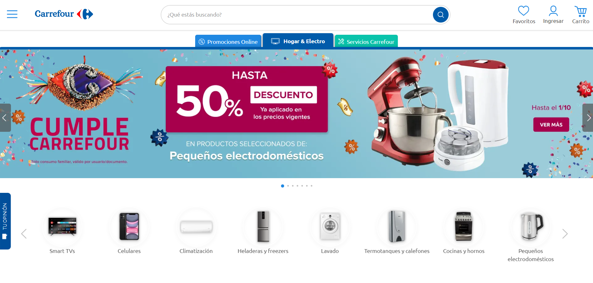

Carrefour
Cuando desarrollamos la página web de Carrefour, nos enfocamos en diseñar una plataforma funcional y atractiva, priorizando la experiencia del usuario y la eficiencia operativa. Nuestro trabajo combinó un diseño moderno, navegación intuitiva y herramientas integradas para mejorar la interacción con los clientes y optimizar los procesos internos. El resultado fue un sitio que refleja la identidad de la marca y se adapta a las necesidades de un gigante del retail.

Adidas
En CODE CRAFTERS, nos apasiona llevar grandes ideas al siguiente nivel. Al colaborar con Adidas, diseñamos una página web que fusiona innovación tecnológica con el estilo dinámico y vanguardista de la marca. Nos enfocamos en destacar su identidad visual, optimizar la experiencia del usuario y crear una interfaz intuitiva que conecta con sus clientes de forma ágil. Incorporamos herramientas avanzadas para gestionar productos, promociones y campañas, reflejando la esencia deportiva y moderna de Adidas.

Audi
Nuestra misión es crear soluciones digitales que reflejen el carácter y la excelencia de cada marca. Cuando trabajamos con Audi, desarrollamos una página web que combinó diseño sofisticado, funcionalidad avanzada y una experiencia de usuario impecable. Nos enfocamos en resaltar la elegancia y la innovación tecnológica de la marca, integrando herramientas interactivas para explorar modelos, agendar test drives y personalizar vehículos. El resultado fue un sitio web que encapsula la pasión y precisión que definen a Audi.